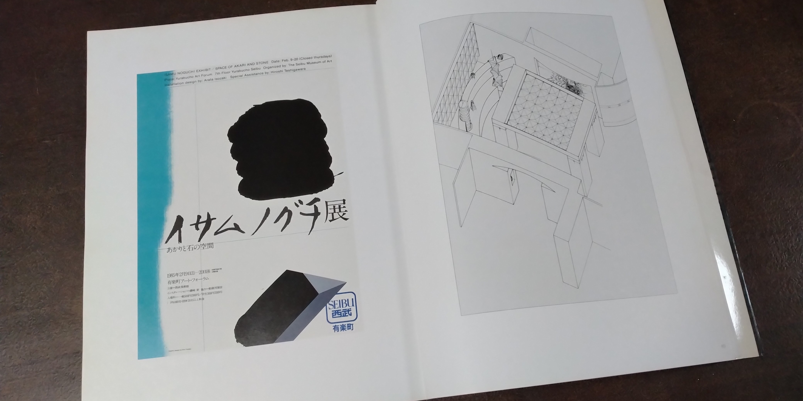
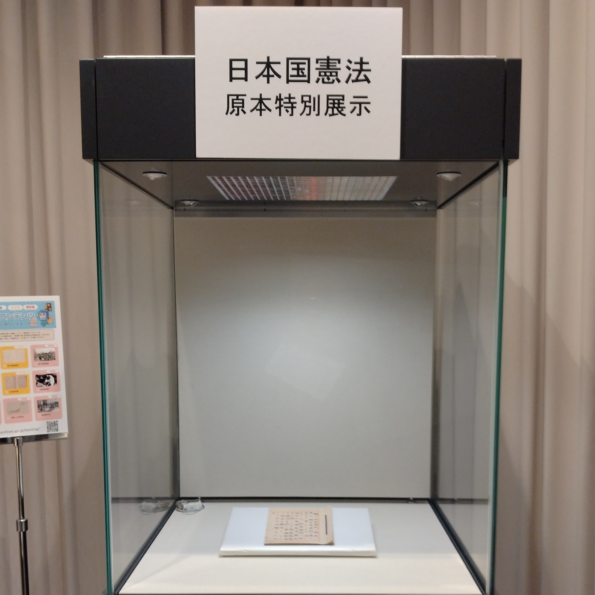

「AMATERASU」
2026-01-01T22:00
作品名：「AMATERASU」― 平和への祈りと、イサム・ノグチとの共鳴
この作品には、私の一貫したテーマである「戦争反対」という、平和への切実なメッセージを込めています。
私が瀬戸内寂聴先生と同世代の作家の方々を深く尊敬している大きな理由は、先生の方々がその生涯をかけて「戦争反対」の信念を貫き、表現し続けてこられたからです。過酷な時代を生き抜いた先達の強い意思は、私の創作活動の指針であり、この「AMATERASU」に込めた願いの根源でもあります。
この作品は、かつて山代温泉にあった百万石梅鉢亭のフロントロビー奥の静謐な空間に設置されていました。
特定の依頼を受けて制作したものではなく、私自身が作家として内なる想いを形にした作品が、ご縁があってこの場所に迎えられたものです。
そこで実現したのが、世界的な彫刻家イサム・ノグチ氏の照明「あかり」とのコラボレーションでした。
空間演出を担当された建築家の方が、私の作品に合わせてイサム・ノグチの「あかり」をセレクトしてくださいました。 私の作品に込めた平和への祈りや制作意図を深く汲み取り、漆の造形と柔らかな光を響き合わせてくださったことが、何よりも嬉しく、光栄なことでした。
思えば、私自身の原点もそこにあります。 私は東京藝術大学を卒業しましたが、その卒業制作においてもイサム・ノグチ氏に強く触発され、漆と「石」を組み合わせる表現を選択しました。 時を経て、再びこのような形で氏の精神と共演できたことに、深い感慨を覚えます。
漆黒の中に浮かぶ「AMATERASU」の輝きと、足元を照らす「あかり」の調和。 あの空間が、訪れる方々の心に静かな平和の祈りを届けていたことを願っています。
卒展の季節に思い出す、イサム・ノグチと「石」の縁
2026-02-11T13:30

現在、美術大学卒業制作展（卒展）のシーズンですね。
卒業制作を東京都美術館で展示する直前のことでした。有楽町で開かれていた「イサム・ノグチ展：あかりと石の空間」を訪れた私は、それまでの美術展とは全く異なる光と石が創り出す空間演出に衝撃を受けました。
その感動のまま「自分の作品の土台には石しかない」と確信したのですが、展示は目前。急な思い付きでしたが、漆科の先生に無理を承知で相談したところ、彫刻科の方から立派な石を工面してくださいました。その時のお礼が日本酒「剣菱」2本だったのも、今では懐かしく、当時の藝大らしい思い出です。
最近になって、その会場構成を手がけていたのが建築家の磯崎新氏だったということを知りました。
私はかつて大分に住んでいた頃、氏が設計した大分県立大分図書館（現アートプラザ）によく通っていました。不思議な感じです。
ノグチ氏の精神、磯崎氏の空間、そして漆科と彫刻科の先生方の助けがあって完成した私の卒業制作。 当時の作品はこちらからご覧いただけます。
映画「もののけ姫」に見る漆の風景
2026-03-01T13:00
今回は、有名なアニメ映画と漆のつながりについてお話しします。
先日、「もののけ姫」のDVDを見ました。映画では、人間と自然と共にどう生きるかが描かれています。
映画の中で、主人公アシタカの故郷の場面に注目してみてください。
アシタカの村では、建物や大きなツボに漆が塗られています。
一方で、タタラ場という別の場所の食事風景を見てみましょう。
人々は、漆が塗られていない木のままのお椀で食事をしていました。
この描写の違いはとても興味深いです。
ここから、アシタカの故郷である東北地方が「漆の里」だったということがわかります。
蝦夷（えみし）の戦いがあった岩手県には、二戸市（にのへし）という場所があります。
二戸市には今も、漆の木がたくさん育つ里があります。私が使っている国産漆の代表的な産地です。
ウルシの樹液で生計を立てる職人たちも多くの悩みを抱えています。木を育て、樹液をいただき、また森をよみがえらせる。
映画の細かい描写からも、日本の漆の歴史や文化が伝わってきますね。ぜひ、次に映画を見る時は漆の道具にも注目してみてください。
執念の「合口」— 挫折から生まれた乾漆技法
2026-04-02T14:30


昨年の高島屋での展覧会にて、多くの方に足を止めていただいた作品をご紹介します。
乾漆の「筒椀」です。
この作品には、私の作家人生において忘れられない、ある「悔しさ」が刻まれています。
転換点となった、あるキャンセル
この筒椀はもともと、「蓋をつけてくれたら購入したい」というお話をいただいたことがきっかけでした。私の筒椀と同じ技法を用いる場合、本来1年という製作期間は決して長くはありません。むしろ短い部類に入りますが、ご要望に応えるべく他の作業よりも優先して急ぎ制作を進めました。
しかし、ようやく完成してお見せしたところ、結果はキャンセル。その時の悔しさは言葉にできるものではありませんでした。
しかし、その経験が私の火をつけました。「誰かのための蓋」ではなく、「自分が心底納得できる、究極の蓋」を作り直そうと決意したのです。そこからさらに数年の歳月を費やし、試行錯誤を繰り返しました。
「人間国宝の方々を上回る精度を実現したい」。
その厚かましいモチベーションの源泉は、あの日味わった挫折にあります。
9000年の歴史と、現代の意地
この作品に使用している漆には、特別な背景があります。
映画「もののけ姫」の時代設定の頃から、エミシの村の地に息づく昔ながらのウルシ樹から採取された貴重な樹液を使用しています。
古来より続く森の生命力を宿したその漆は、塗り重ねるごとに深く、澄んだ表情を見せてくれます。素材そのものが持つ力に導かれるように、丁寧に作業を重ねていきました。
漆という素材が人によって使われ始めてから、およそ9000年。その古から続く素材と技法を用い、数年かけてようやく到達したのが、この「目視でも境目が判別できない合口（あいくち）」です。
会場で「どこが合口かわからない」という声をいただいた時、あの時の悔しさが、ようやく作家としての確かな自負へと変わりました。
語らないという矜持
私はもともと、漆とは無縁の経歴からこの世界に入りました。東京藝術大学を卒業し、漆芸家として歩んできましたが、制作の具体的な工程についてはあえて私から語るつもりはありません。
挑戦したいと思う作家がいるのなら、自ら考え、挑めばいいことだと考えているからです。ドジャースの大谷翔平選手も、同期の日本選手に手の内をあまり教えなかったというテレビの放映を見ましたが、その姿勢には非常に共感し、心強く感じています。
過程を説明するのではなく、どれほどの苦悩があろうとも、仕上がった作品はただ静かに、美しくそこにある。それが漆芸家としての私の矜持です。完成された「作品」そのものがすべてを語る。9000年の伝統と現代の作家の意地が重なる一点を、ぜひ感じていただければ幸いです。
日本国憲法
2026-05-01T10:30


「本物」が放つ、言葉を超えた重み
国立公文書館にて、憲法記念日（5月3日）にちなんだ「日本国憲法」原本の特別展示が行われています。4月29日から5月6日までの限られた期間、普段は目にすることのできない歴史の「正本」を間近で見ることができる貴重な機会です。
昨日、私も実際に足を運んできました。
写しではなく「原本」を見るということ
展示ケースの中に静かに鎮座する原本を前にして、まず感じたのは「写し」とは決定的に違う圧倒的な存在感でした。そこにあるのは、単なる情報の記録ではありません。当時の人々が向き合ったであろう、紙の質感、墨の乗り、そして一文字一文字に込められた決意のようなものです。
これはアート作品を鑑賞する際の感覚と、どこか深く繋がっている気がします。
優れた美術品を前にした時、私たちは単なる「形」を見ているのではなく、その奥にある作家の息遣いや、素材と対峙した時間の集積を肌で感じ取ります。本物だけが持つ「気」のようなものが、時を超えて見る者の心に訴えかけてくるのです。
制作という営みの「大変さ」
また、原本を眺めていると、この膨大な条文をまとめ上げ、一つの形として完成させるまでにどれほどの試行錯誤があったのか、その「制作の大変さ」が痛いほど伝わってきました。
ゼロから何かを生み出し、それを後世に残る形に定着させる。その営みに伴う責任の重さと、生みの苦しみ。 漆という素材を通じ、数千年の歴史を意識しながら日々制作に向き合う者として、この一冊の書物が持つ「重み」を自分自身の創作への姿勢に重ね合わせずにはいられませんでした。
歴史の転換点に生まれた「本物」の迫力。
皆さんもこの大型連休中、ぜひその目で確かめてみてはいかがでしょうか。
【日本国憲法原本特別展示】
・場所：国立公文書館（東京・竹橋）
・期間：2026年4月29日（水・祝）～5月6日（水・祝）
・内容：昭和21年11月3日の公布の際に作成された原本を展示
歴史と創作、それぞれの「原点」に触れる、静かで濃密な時間になるはずです。
TOP